The C3 tab is your Command, Control and Communication portal. You can control product information, communicate by emails and command the system to make running annual programs an easy process. This topic covers Mass Email and Initialize Programs.
Benefits of Mass Email and Initialize Programs:
Standardize emails and launch programs for consistent messaging.
Rapid program initialization.
Can view notification status tracking.
All emails are sent in a blind format.
Mass Email – allows you to send out an email blast(s) to a list of one or more participants that you create through ReadySet.
Initialize Programs – allows you to manage programs in two different methods:
Initialize a program and send an email “call to action” to a selected list of people.
Initialize a program for a selected list with no email blast.
Before You Begin
These are powerful programs, be sure to confirm all selections before sending.
Mass Email allows the sending of a mass email in just a few steps. There are two parts to sending a mass email: the 'what' and the 'who'. The “What” is choosing a message from a list of templates, and the “Who” is defining a list of recipients to receive the message, selecting from a set of pre-authored email templates which each serve different communication needs. For example, choose a Reminder Notice template to inform a person that they have an appointment. There is also a Blank Email Template that allows composing custom messages. These are called Notification Typesin ReadySet. Email distribution lists can be used from preset Distribution Lists,or create lists using the searchcriteria option or using a report-created list.
Reminder Notice using Search and a Blank Email Template
Go to C3 > Mass Email.
Click New Notification.
This opens the Notification dialog box.
In the Notification Type field, select Blank Email Template.
Choose a From.
This will default to the email address set up during the implementation phase.
Subject and Message:
Enter text.
Create templates in a Word program and copy into this field.
There are formatting options available in this screen.
Click Save.
You must do this before creating a distribution list or adding employees.
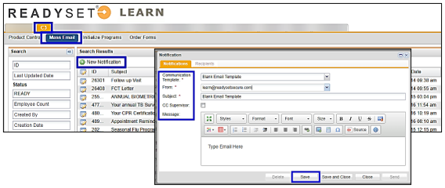
On the Recipients tab, click Add Employee(s).
Enter the Last Name and First Name of the employee, or use the many different options listed under the Search options to build a list.
For example: Department, Facility, Location, Supervisor, Cost Center, Date of Birth or Date of Hire.
Click Search.
Select the checkboxes of the participants for the email.
If there are multiple pages of participants, check the top box to select all and indicate how many have been selected on this page. If multiple pages, click Add all # employees to the list.
Click Add Selected and repeat until the list is complete.
Click Close when finished adding employees.
The participants selected will display in the Send to these Employees display.
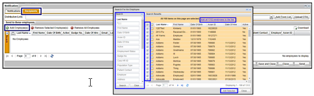
Click Add, Remove Selected Employees or Remove All Employees to edit the list.
When removing All Employees, do not check the Select All box. The Remove All Employees button will delete all pages of participants.
The Delete function removes the complete Email Notification, while Close exits notification without saving.
When ready to send the emails, click Send.
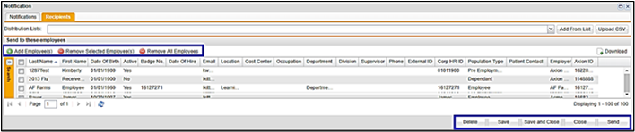
When Send is selected, click Yes.
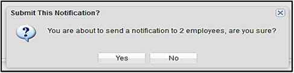
All Employee Email Blast
Use this option to send a reminder out to all employees, such as the Seasonal Flu Reminder Notice.
Click New Notification to open the Notification dialog box.
In the Notification Type field, select the Seasonal Flu email template.
Select the following:
From – this email default is setup during the implementation process.
Subject – will default to the subject in the email template.
Message – will default to the Notification verbiage in the email template.
Click Save.
You must do this before selecting a distribution list or adding employees.
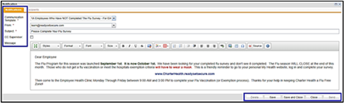
Select the Distribution List.
Click Add From List.
This will create the list in the Send to these employees dialog box.
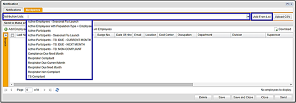
Use the Add Employee(s), Remove Selected Employee(s) or Remove All Employees as appropriate.
Active Employees equals all employees, volunteers, contractors etc. — anyone who has active record. Active Employees with Population Type = Employees is only employees and does not include other population types such as volunteers, contractors etc.
The total number of records in the Distribution List is displayed in the lower right corner.
Click Delete to remove the complete email notification or Close.
Click Save or Save and Close to keep the notification but not send.
When ready to send the emails, click Send.
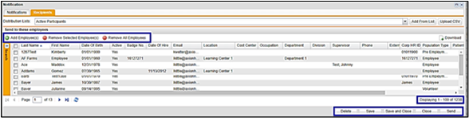
When you click Send, click Yes.
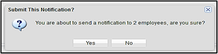
Using the Mass Email Search Option
Use the Mass Email Search find by subject, date sent, status (ready, sending, sent) employee count and created by. The most common search is Status, to see the progress of notification is sending or sent. Another option is to see to whom it was sent.
Select the Status Search field, this displays the options of Ready, Sending, Sent.
Status defaults to Ready – Notifications ready to send.
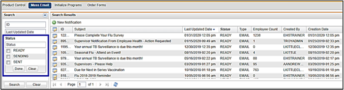
Verify Sent Mass/Group Emails
You can verify if a Mass/Group email was successfully sent and to whom it was sent.
Go to C3.
Click Mass Email.
Using the search criteria on left menu, click the Status box and change from READY to SENT.
Click Search or press Enter.
Find and open the email by clicking the Edit icon of the notification.
The dialog box will display the notification.
Click the Recipients tab.
You will see the list of employees emailed.
If needed, use the Search option (located on the left side of screen, click on arrows to open) to find a specific participant name.
C3 correspondence also display in the participant’s correspondence.
Using Initialize Programs Menu
ReadySet supports annual programs by providing the appropriate survey to the participant, and if set up, will provide the correct charting form to the clinician. The linking of the survey to the chart(s) is setup by ReadySet. Each is given a program name such as Seasonal Flu. When a program is initialized, it is assigning the survey and chart package to each participant in the program. The survey(s) will be available to the participant in their My Health account, and the corresponding charting form(s) will be available to the clinician in EHS Manager or Event tab. This feature is important when it is necessary to manage large populations through a program at one time.
Initialize Programs has two options:
A. Initialize a program and send an email blast to a selected distribution list.
B. Initialize a program only
In both options, ReadySet will initialize the participant survey(s) and can order a clinical charting form(s) combination that have been created for the program. Choose Initialize Program Only when the notification will not be used to send out a call to action email to the participants in the program. For example, the organization’s own email and intranet system is used to announce the program. Use ReadySet to send emails to the participants in the program, then select the Initialize Program with Email.
Initialize Program with Email
Click New Notification.
In the Notification Method field, select Initialize Program with Email.
In the Notification Type field, select the program notification to launch.
From, Subject and Message will display the information from the template.
Click Save before adding distribution list.
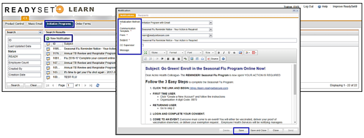
Select the Recipients tab.
Recipients can be added by using the preset Distribution List, Upload CSV or Add Employee option.
Participants added will display in the Send to these employees dialog box.
Use the Add Employee(s), Remove Selected Employee(s) or Remove All Employees as appropriate.
The total number of participants in your distribution list is displayed in the lower right corner.
Click Delete to remove the notification, or Close to exit the display.
Click Send to launch the notification.
This sends the email and activates the survey(s) attached.
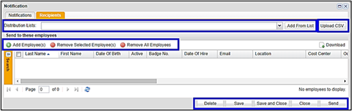
When you click Send, click Yes.
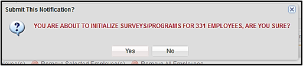
Verify if a Program Notification Email Requesting Survey Completion Was Sent
Go to C3.
Click Initialize Programs.
Using the search criteria on left menu, click the Status box and change from READY to SENT.
Click Search or press Enter.
Find and open by clicking the Edit Icon of the notification.
The dialog box will display the notification.
Click the Recipients tab.
You will see the list of employees emailed.
Use the Search option to find a specific participant name.
C3 correspondence also displays in the participant’s correspondence.
Initialize Program Only
Click New Notification.
In the Initialization Method field, select Initialize Program Only.